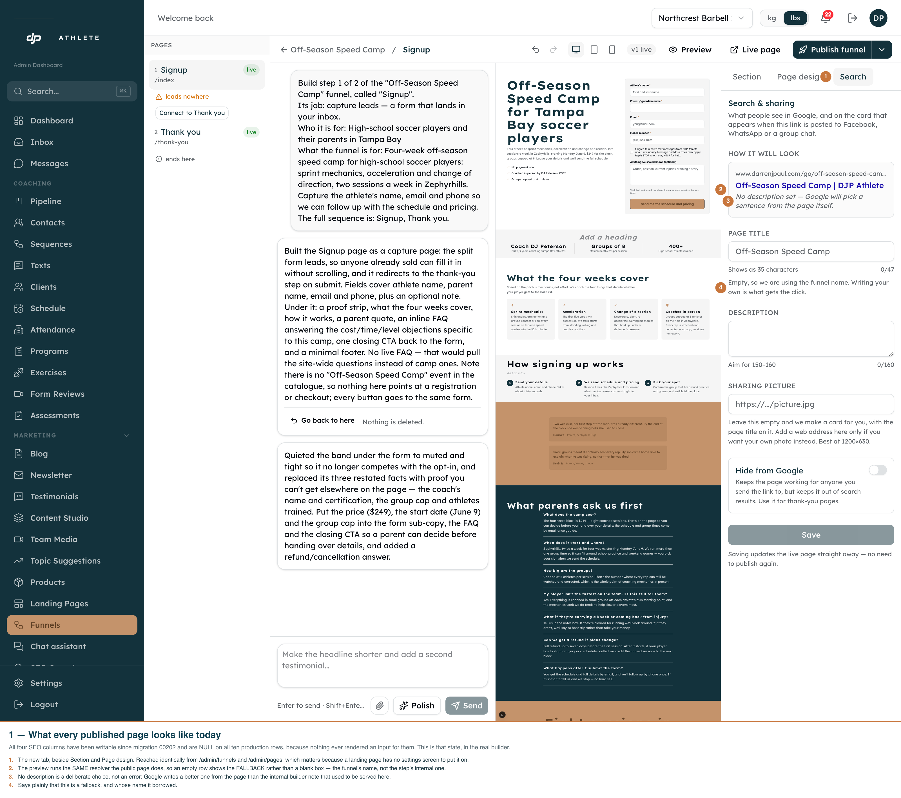
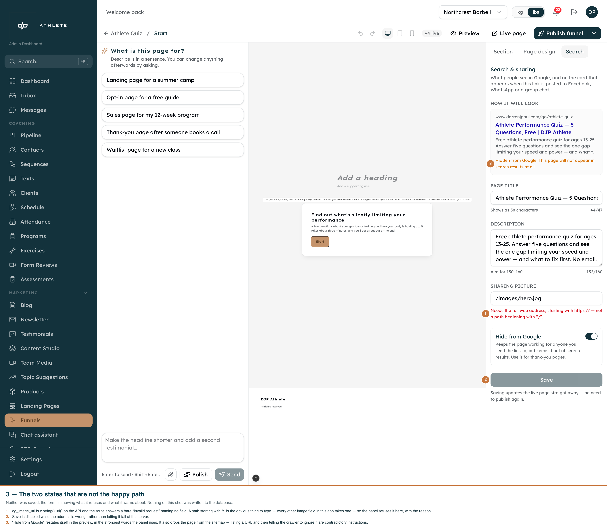
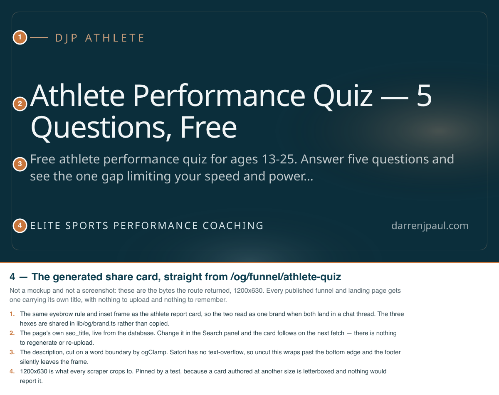
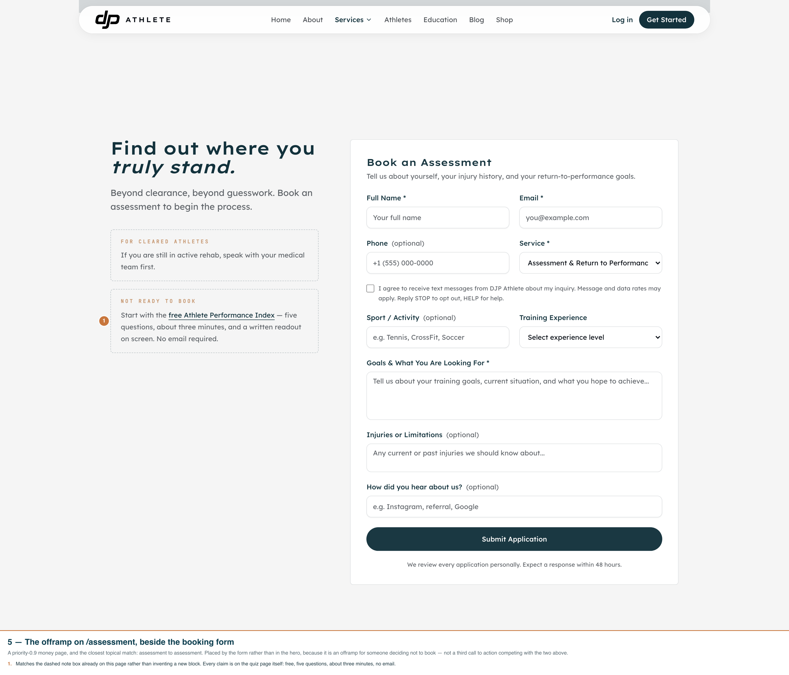
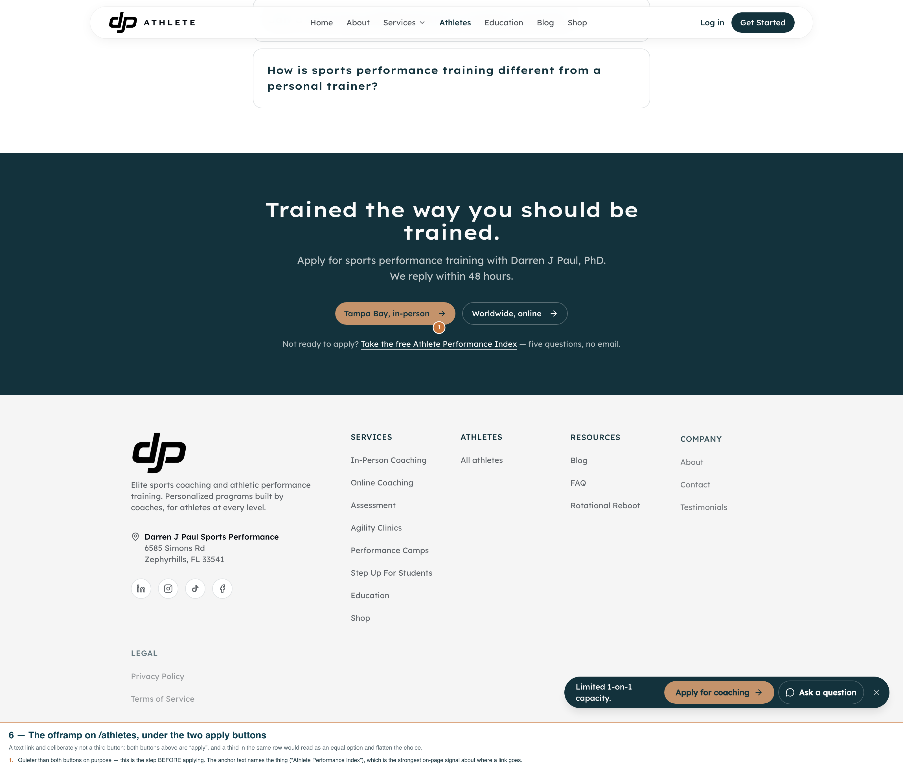

Funnel SEO — the “Search” panel, the share card, the schema and the links
Every shot is the real builder on its real route
(/admin/funnels/<id>/edit/<stepId>), driven with Playwright against the dev
clone and photographed inside the real shell — the real rail, the real canvas, the real header.
Nothing is a storybook or a scratch mount of the component. Annotations are burned into each PNG.
Shots 1–3 are Chromium 1600×1280 @2x; the floating Messages dock and Next's dev overlay are hidden
from the recorder only, never by editing the app. Shot 4 is not a screenshot at all — it is the
bytes the card route returned. Reproduce all four with
node scripts/capture-funnel-seo-panel.mjs --port=3050.
Light only, deliberately. The admin UI has no dark variant — .dark is
a class these components were never built against — so a dark-mode shot would photograph a
pre-existing bug rather than this feature.
What changed on the live page
/go/athlete-quiz, measured against production before and after. The copy was applied
with scripts/apply-funnel-seo-copy.ts; the OG, canonical and Twitter tags need the
code deploy.
| Before | After |
|---|
<title> |
Start | DJP Athlete |
Athlete Performance Quiz — 5 Questions, Free | DJP Athlete |
| description |
The RPI quiz funnel. |
Free athlete performance quiz for ages 13-25. Answer five questions and see the one gap limiting your speed and power — and what to fix first. No email. |
og: tags |
0 — the whole block was deleted by an explicit undefined |
5 (title, description, url, image, type) |
og:image |
none |
a generated 1200×630 card carrying the page's own title |
| canonical |
none; the page answered on two URLs |
/go/athlete-quiz, from both URLs |
| structured data |
none — marketing routes had JSON-LD, /go/ pages had none |
a WebPage blob built from the same resolver as the title |
| internal links in |
zero — a true orphan page |
two, from /assessment and /athletes |
| in sitemap.xml |
no — 0 of 34 URLs were /go/ |
yes, and excluded when noindex is on |
01 — The fallback state: what every published page looks like today
01-fallback-state.png · subject off-season-speed-camp-dxf8, chosen
because it has no SEO copy — the state all ten production rows are in. A subject that
already had copy would silently demonstrate the other branch.

- The preview runs the same resolver the public page does, so an empty row shows the fallback — the funnel's name — rather than a blank box.
- “No description set” is stated as a choice, not an error: with none, Google writes a better one from the page than the internal builder note that used to be served.
- Counters read
0/47 and 0/160.
02 — The filled state, with the counters doing their job
02-real-copy-and-counters.png · subject athlete-quiz, holding the copy
that is now in production.
44/47 — the budget is 47, not 60, because the layout template appends “ | DJP Athlete”. A counter set to 60 walks you past the truncation point while reading green.- “Shows as 58 characters” — the rendered length, which is the number Google actually truncates and the one the owner cannot otherwise see.
152/160 on the description; the counter flags “short” under 150 and “long” over 160.- The closing line — “Saving updates the live page straight away — no need to publish again” — exists because these four columns are read per request, outside the frozen published version. Everything else in this builder needs a publish, so without that sentence a saved-but-unchanged live page reads as a failed save.
03 — The two states that are not the happy path
03-the-two-guards.png · neither was saved; nothing on this shot was written to the
database.

og_image_url is z.string().url() on the API, and the route answers a bare “Invalid request” naming no field. A path starting with / is the obvious thing to type — every other image field in this app takes one — so the panel refuses it here, with the reason, and disables Save.- “Hide from Google” restates itself in the preview in the strongest words the panel uses. It also drops the page from the sitemap: advertising a URL and then telling the crawler to ignore it are contradictory instructions.
04 — The generated share card
04-the-generated-share-card.png · the bytes
/og/funnel/athlete-quiz returned, saved straight to disk. Not a
screenshot of a browser showing a PNG.

- Why generated rather than uploaded. A static PNG closes the gap once — someone makes, uploads and wires one per funnel, and the nine drafts get nothing the day they go live. This closes it permanently: every funnel and landing page, including ones that do not exist yet, gets a card with its own title.
- Why a route and not
opengraph-image.tsx. The file convention is the house pattern (app/athlete/[token]/opengraph-image.tsx) and Turbopack refuses it here — “catch all segment must be the last segment modifying the path”. The public funnel page lives under [[...step]]. Found by running it.
- The owner's own image still wins. Setting
og_image_url overrides the card; verified against a running server in both directions.
- It never fails to an error. An unreadable row or an unknown slug still returns a PNG — a scraper that gets a 500 shows no card at all, which is the state this change exists to fix.
05 & 06 — The two links that un-orphaned the quiz
05-assessment-offramp.png, 06-athletes-offramp.png ·
both photographed in place on the real marketing page, because the question
they have to answer is whether the offramp reads as helpful or as clutter —
and that is a question about its neighbours.


- The sitemap did not fix this. A sitemap entry makes a page discoverable; a link is what passes it authority. Until these two, nothing on the site pointed at
/go/athlete-quiz at all.
/assessment — the closest topical match and a priority-0.9 money page. Placed beside the form, not in the hero: it is an offramp for someone deciding not to book, not a third call to action. Reuses the dashed note box already on the page./athletes — a text link, deliberately not a third button. Both buttons above it are “apply”; a third in the same row would read as an equal option and flatten the choice.- Both anchors name the destination (“Athlete Performance Index”) rather than “here” — the anchor is the strongest on-page signal about where a link goes, and a test pins that.
- Every claim in both — free, five questions, about three minutes, no email — is on the quiz page itself.
Structured data
A WebPage blob, rendered per request by the route — not baked
into the compiled document, which is frozen at publish time.
- Built from the same resolver as the
<title>, so the markup cannot contradict the visible page. Two independent reads of the same columns is how that drift happens.
- Not a
Quiz. Google's Quiz markup describes educational practice problems with the Q&A visible on the page; this quiz's questions are a lead flow and its answers are scored privately. Marking it up as a Quiz would describe content that does not exist.
- No
BreadcrumbList. Funnel pages live in their own route group precisely so they render no site navigation — a breadcrumb would describe a path the page deliberately does not offer.
- No dangling
@id. The repo has shipped one before (lib/brand/author.ts records the fix), so the publisher and website nodes carry their own type, name and url as well as the site's existing ids.
Known gap, not fixed here
Worth deciding on, but out of scope for this pass.
- No photography. The card is typographic. fal is wired in this repo (
@fal-ai/client, and blog heroes already go through flux-pro), so a photographic backdrop is available as a deliberate follow-up — it was considered and not taken, because a generated photo of an athlete on the share card of a business whose proof is real named athletes is a claim the brand does not need to make.
- The sitemap does not fix the orphan-page problem. Nothing on the marketing site links to
/go/athlete-quiz. A sitemap entry makes it discoverable; an internal link is what passes authority.